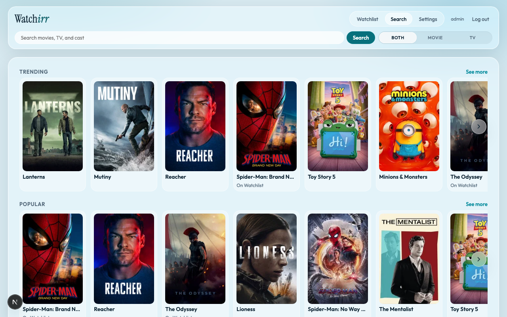

Self-hosted · Jellyfin households
One watchlist. Coverage before acquire.
Search, check streaming coverage, acquire into Radarr/Sonarr only when needed, and track watched — in a single app.

Quick start
-
1
Pull the image
docker pull ghcr.io/watchirr/watchirr:latestPrefer a pin for production:
ghcr.io/watchirr/watchirr:v1.0.1or:v1. -
2
Deploy the stack
Compose example or Portainer stack from the repo — image on port
3001, SQLite under./data.docker compose -f docker-compose.example.yml up -d -
3
Open the app
Visit http://localhost:3001, create the Admin on first run, then configure TMDB / *arr / Jellyfin in Settings.
Full durability, Postgres, and reverse-proxy notes: docs/self-host.md.